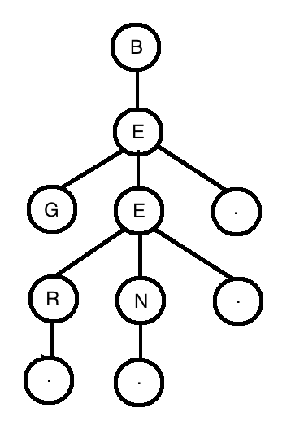

Scrabble Tree
The problem: design a data structure that finds every English word that can be made from a given bag of Scrabble letters
What data structure is best suited for this application? In contemplating this problem, I imagined a structure that contained every word, and as we queried it with a group of letters, the list of potential words we could find would decrease as we removed each letter from our list until we honed in on our desired results.
I think a tree is the best answer here. We can build a tree in which each node holds a letter, and the children of each node represent the subset of words that begin with the letters we have traversed to get to this node.
For example, if we wanted to build this data structure using only the words "be", "bee", "been", "beer", and "beg", it would look like this:

The periods are used to indicate the end of a word.
When we want to find words from a collection of letters, we travel down the tree, looking for children that are in our letters collection. When we find a period, we know we have completed a word and can bubble that result back up the chain. In pseudocode, the function looks like this:
function findWords(letters){
declare a foundWords array
remove the current letter from the letters array
if this.children contains '.'
add the current letter to foundWords
iterate over all of this's children
if you find a letter in the letters array
call findWords on that child, passing in letters
prepend the current letter to each value returned from the child's findWords call
add these values to the foundWords array
return foundWords
}
I'm not certain what the time complexity of this operation is. Looking for words involves iterating over a node's children, finding one (or more), and then iterating over that node's children etc etc until we run out of letters to search for. We don't have to look at every node; large swaths of the tree are almost certain to be ignored in each lookup. However, more words in the tree does mean the operation will likely take longer, as you will probably find more words. Does this point to linear time?
Or, is the operation linear with respect to the number of letters you are searching for?
Anyone have any insight in this?